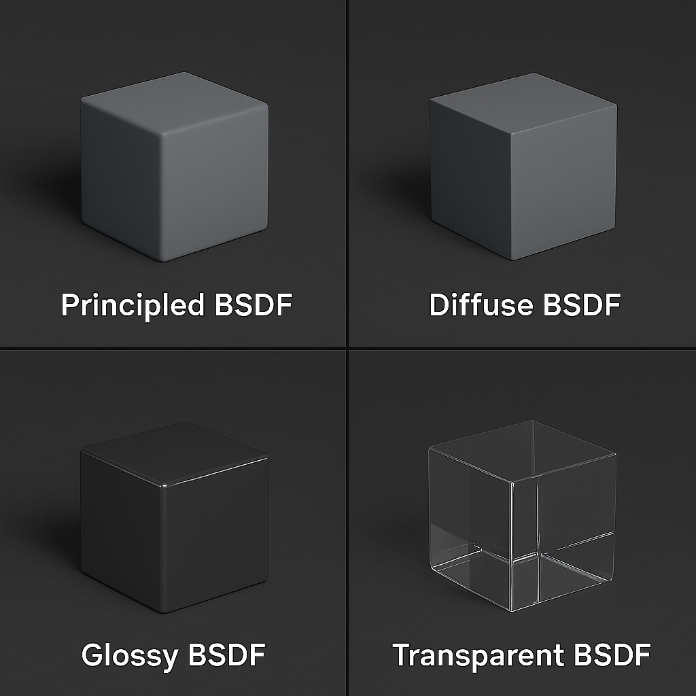

🎨 Урок 5: Матеріали і кольори
1. Що таке матеріали?
Матеріал — це набір властивостей, які визначають, як поверхня об'єкта виглядає при освітленні: колір, блиск, прозорість, шорсткість тощо.
У Blender матеріали створюються за допомогою шейдерів — спеціальних модулів, які описують, як світло взаємодіє з об'єктом.
2. Основні типи шейдерів
- Principled BSDF — універсальний реалістичний шейдер (для металу, шкіри, пластику тощо).
- Diffuse BSDF — матова поверхня, розсіяне світло.
- Glossy BSDF — блискуча поверхня, що відбиває світло.
- Transparent BSDF — прозорі або напівпрозорі об'єкти (скло, вода).

3. Як створити матеріал у Blender
- Виділіть об’єкт у сцені.
- Перейдіть на вкладку Material Properties (значок сфери).
- Натисніть New, щоб створити новий матеріал.
- Обирайте тип шейдера (наприклад, Principled BSDF) та змінюйте його параметри: Base Color, Roughness, Metallic тощо.
4. Перегляд матеріалів у реальному часі
У верхньому правому куті 3D-вікна є іконки режимів перегляду:
- Solid — звичайний вигляд об'єктів без матеріалів.
- Material Preview — попередній перегляд матеріалів у сцені зі світлом.
- Rendered — фінальний вигляд з урахуванням усіх налаштувань освітлення, тіней, текстур тощо.
✅ Практична робота №5
Завдання: Застосуйте матеріали до всіх об’єктів у попередніх роботах:
- Сонце – жовтий матеріал. Планети різних, відповіних кольорів.
- Будиночки – різні кольори стін, дахів, рамок.
- Пірамідка – яскраві кольори (червоний, синій, зелений).
- Використовуйте режим Material Preview, щоб побачити, як виглядає колір у світлі.